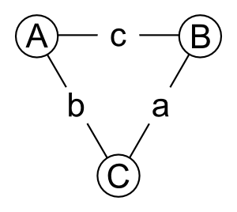

Introduction
The trigon is a juggling prop with tricks influenced by toss juggling, poi, and many other disciplines. In order to allow the communication of tricks which involve throwing and catching strings and balls, I have started constructing a notation for describing these patterns. TrigonViz is a visualizer of two separate notation systems, a human friendly notation which describes actions taken upon the trigon, and a more flexible notation which describes the succession of states the trigon is in. If you have any questions or suggestions, please feel free to ask on the Trigon Juggling Facebook group. For more information, see the list of trick ideas, or how to build a trigon. For an example of a trigon in action, see this video.
Contents
Reading Pattern Diagrams
A Box pattern could be described using action notation as
RotateRight RotateLeft
or in state notation as
A:B C:A A:B.
This is displayed as:
Box
These diagrams are drawn based on the following labeling of the parts of a trigon:

Balls are labeled with capital letters, and strings are labeled with lower case letters. The Box pattern above only uses balls, so the edges are left out of the diagram. The diagram consists of three frames. In the first frame, the left hand holds the "A" ball and the right hand holds the "B" ball. The next frame shows the "C" ball in the left hand, and the "A" ball in the right hand. The diagram doesn't indicate how you perform this change of ball position, there are an infinite number of different ways this could be executed. The last frame returns to the starting position. To perform the pattern, loop these two movements continuously.
In general, to read a diagram, hold the objects in the way indicated by the first frame. Use the labels given by the first frame to figure out how to move through subsequent frames. When you're on the last frame, to repeat the pattern you may need to re-establish the label of each object. For instance, in the cascade pattern, notated as PivotRight PivotLeft or A:B C:B C:A, when the last frame is reached you must relabel the objects to match the first frame. The pattern consists of two actions which are repeated, but to communicate these two actions, three states must be described.
Cascade
Notating Patterns
State notation is a low level way of describing the succession of states the trigon enters. It is capable of describing most patterns which involve throwing and catching balls and strings. Action notation is still a work in progress and can only describe a fairly small number of patterns. Ideally, all patterns which can be described with state notation will be describable using action notation. To test either notation, visit the trigonviz editor. To see what the current action notation keywords are, go to the list.
Action notation consists of a list of space (or comma) separated actions. This list can be optionally followed by a "*", which indicates that these actions should be followed by the same set of actions in the opposite direction. The example we're going to use here uses siteswap notation: if you aren't familiar with siteswap, take a look at Mike Moore's tutorial video for an introduction. The pattern 423 performed with balls only can be written in several different ways. We could write PivotRight PivotRight or PivotRight PivotRight * in action notation. In state notation, we could right A:B C:B A:B A:C A:B or A:B C:B A:B *.
423
The "*" doesn't increase the flexibility of the notation, it just makes it a little more concise.
Contributing to Action Notation
Action notation still has a long way to go before it will be useful. I'm hoping to eventually have a notation which is as expressive as state notation, but significantly easier to read, write, and verbalize. To contribute to action notation, figure out better words for actions than I'm currently using, or think of words for actions that haven't yet been named. Please bring up any suggestions you have on the Trigon Juggling Facebook group, or if you're technically inclined, you can make the required changes to TrigonViz yourself! Fork the git repository, modify notation.js, play with the result using trigonviz.html, and submit a pull request!